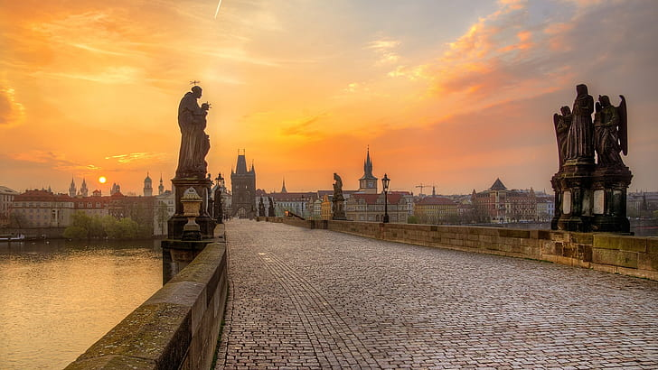
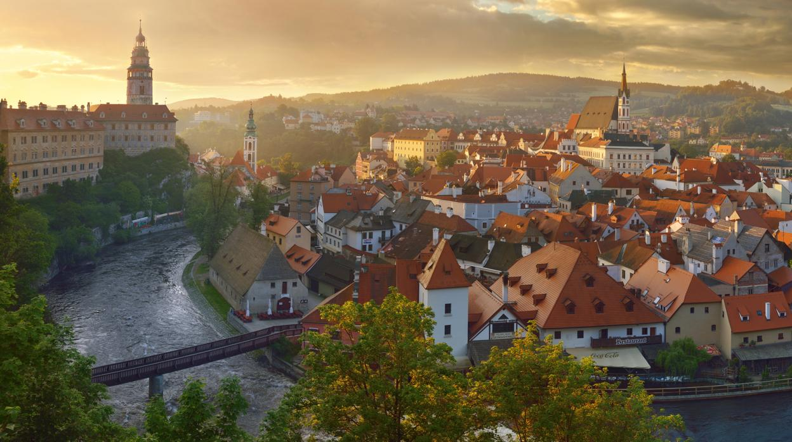
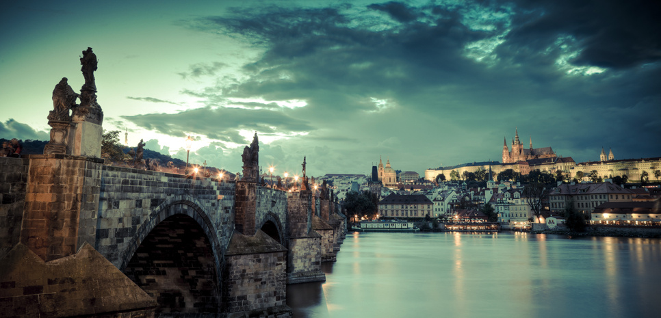

Es el monumento más visitado de Praga. Despuntando sobre la margen izquierda del Moldava, sus prietas hileras de agujas y palacios dominan el centro urbano cual fortaleza de cuento. Intramuros aguarda museos y galerías que custodian algunos de los mayores tesoros artísticos y culturales
El Ayuntamiento de la Ciudad Vieja, fundado en 1338, es un conjunto de edificios medievales presididos por una excelsa torre gótica. Cada hora, los Doce Apóstoles desfilan por las ventanas del reloj, atrayendo a cientos de visitantes que contemplan este espectáculo centenario único en el mundo.
Plasmada en postales que destacan la estatua ecuestre del “buen rey Wenceslao”, la plaza fue punto de encuentro de orgullosos checos y manifestantes de la Revolución de Terciopelo.
Este impresionante puente de piedra, encargado por el emperador Carlos IV en 1357 y flanqueado de estatuas de santos, constituye en cruzar desde la Ciudad Vieja a Malá Strana.
Ubicación: Praga, República Checa
La conmoción es enorme en Praga un día después de que un joven de 24 años provocara la muerte de 14 personas y dejara heridas a otras 25 en la Universidad. Antes de provocar la masacre en el centro educativo, habría matado a su propio padre.
Un avión de pasajeros que volaba de Birmingham a Bucarest aterrizó en el Aeropuerto Vaclav Havel de Praga debido al nacimiento de un bebé a bordo.
A 35 metros de altura y sin red, así sorprendió la equilibrista francesa Tatiana-Mosio a cientos de personas en París. Un paseo por la cuerda floja en el distrito de Montmartre, en el norte de la capital de Francia. Acompañada por una orquesta de cámara y sin ningún equipo de seguridad. Se preparó para el evento durante un año y practica el funambulismo desde los ocho años.
El incendió en el hotel, un palacio de estilo neorrenacentista con 76 habitaciones, comenzó por razones que aún se desconocen. Unas 40 personas, en su gran mayoría extranjeros, han sido evacuadas.